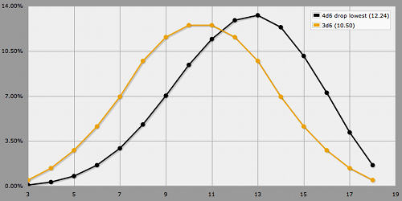
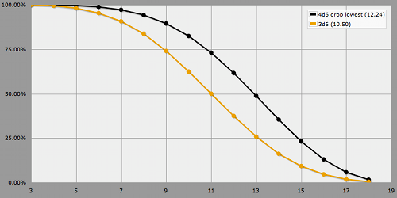
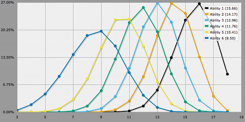
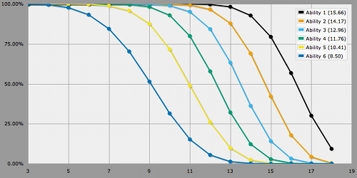

4d6 Drop Lowest
What Ability Scores to Expect
Who doesn't know D&D's ability generation method, rolling 4d6 and dropping the lowest die? I guess a lot of people know about it. But how many people know what to expect when they roll their six ability scores?
Here's a 4d6 drop lowest roll in AnyDice, compared to a regular 3d6 roll.
output [highest 3 of 4d6] named "4d6 drop lowest" output 3d6 named "3d6"

It is quite a bit ahead of the regular 3d6. Here's the same data displayed using the at-least graph. This is what a player is really interested in.

As you can see, those coveted 18s are quite elusive! But so far we're looking only at a single roll. How does it look when taking all six ability rolls into consideration?
ABILITIES: 6 d [highest 3 of 4d6]
loop P over {1..6} {
output P @ ABILITIES named "Ability [P]"
}
With this code we extract the highest rolled ability, then the second highest, and so on, and display each with a separate graph line.

And here is the at-least graph.

This teaches us that there's only a 9.34% chance to get at least one 18 out of six rolls. Getting at least two 18s has only a 0.38% chance, and so on.
| Highest at least | One | Two | Three |
|---|---|---|---|
| 18 | 9.34% | 0.38% | 0.01% |
| 17 | 30.07% | 4.03% | 0.34% |
| 16 | 56.76% | 17.85% | 3.26% |
| 15 | 79.40% | 42.16% | 14.13% |
| 14 | 92.80% | 69.01% | 36.29% |
It also shows us that the average roll is rougly 16, 14, 13, 12, 10, 9. This is pretty close to the D&D 3e elite array (15, 14, 13, 12, 10, 8) and the slightly boosted D&D 4e standard array (16, 14, 13, 12, 11, 10).